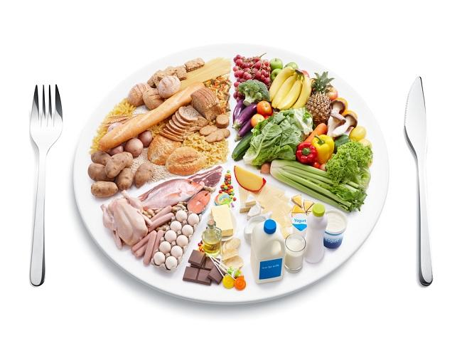

.png)

ISI
NUTRISI KITA
🥗 1. Macam-Macam Zat Gizi

🥗 1. Macam-Macam Zat Gizi
Zat gizi terbagi menjadi dua kategori utama:
🔹 Makronutrien (Dibutuhkan dalam jumlah besar)
1️⃣ Karbohidrat – Sumber energi utama tubuh.
✔ Terdapat dalam nasi, roti, pasta, ubi, buah.
✔ Pilih karbohidrat kompleks (gandum utuh, oatmeal) untuk energi lebih tahan lama.
🧐 Menurut Gibney et al. (2013), karbohidrat merupakan 50-60% dari total kebutuhan energi harian!
2️⃣ Protein – Membangun otot dan jaringan tubuh.
✔ Sumbernya: daging, ikan, telur, tempe, tahu, kacang-kacangan.
✔ Protein membantu pembentukan enzim, hormon, dan sistem kekebalan tubuh.
💡 Lean (2019) menyatakan bahwa protein sangat penting bagi pertumbuhan dan perbaikan jaringan tubuh!
3️⃣ Lemak – Cadangan energi dan pelindung organ tubuh.
✔ Sumber lemak sehat: alpukat, ikan salmon, minyak zaitun, kacang-kacangan.
✔ Hindari lemak trans yang banyak ditemukan dalam makanan cepat saji!
🌟 Menurut Mousa et al. (2019), lemak sehat berperan dalam kesehatan jantung dan otak!
4️⃣ Air – Menjaga keseimbangan cairan tubuh.
✔ Penting untuk pencernaan, transportasi zat gizi, dan menjaga suhu tubuh.
✔ Minumlah 8 gelas air per hari untuk tetap terhidrasi!
💡 Corsello et al. (2021) menegaskan bahwa dehidrasi dapat mengganggu fungsi otak dan metabolisme!
🔹 Mikronutrien (Dibutuhkan dalam jumlah kecil, tapi sangat penting!)
💊 Vitamin
✔ Vitamin A – Penting untuk kesehatan mata (wortel, sayuran hijau).
✔ Vitamin C – Meningkatkan kekebalan tubuh (jeruk, kiwi, paprika).
✔ Vitamin D – Membantu penyerapan kalsium (sinar matahari, ikan salmon).
⚙ Mineral
✔ Kalsium – Kuatkan tulang dan gigi (susu, keju, tahu).
✔ Zat Besi – Mencegah anemia (daging merah, bayam, hati ayam).
✔ Zinc – Membantu penyembuhan luka (biji labu, daging sapi).
🧐 Menurut Hamza et al. (2024), kekurangan mikronutrien dapat menyebabkan gangguan kesehatan seperti anemia, osteoporosis, dan penurunan daya tahan tubuh!
🍽 2. Prinsip Pola Makan Sehat Untuk hidup sehat, kita harus menerapkan pola makan yang seimbang dan bervariasi. Berikut adalah prinsip dasar pola makan sehat:
✅ 1. Konsumsi Makanan Beragam
🔹 Makanlah berbagai jenis makanan untuk memastikan tubuh mendapatkan semua zat gizi yang dibutuhkan.
🔹 Jangan hanya makan satu jenis makanan, misalnya hanya nasi dan lauk!
📌 Menurut Santosh & Mehdi (2019), variasi makanan membantu tubuh mendapatkan semua zat gizi penting!
✅ 2. Gunakan "Piring Sehat"
💡 Gunakan metode 1/2 - 1/4 - 1/4:
✔ 1/2 piring → Sayur dan buah 🍎🥦
✔ 1/4 piring → Protein (ikan, ayam, tahu, tempe) 🥩🍗
✔ 1/4 piring → Karbohidrat (nasi, roti, kentang) 🍚
📌 Bialostosky et al. (2002) menyatakan bahwa pola makan seimbang membantu menjaga berat badan dan mencegah penyakit kronis!
✅ 3. Batasi Konsumsi Gula, Garam, dan Lemak Jenuh
🚫 Gula berlebih = Risiko obesitas dan diabetes 🍭
🚫 Garam berlebih = Meningkatkan tekanan darah 🧂
🚫 Lemak jenuh = Meningkatkan kolesterol buruk 🛑
📌 DellaPenna (1999) menyebutkan bahwa pola makan tinggi gula dan garam meningkatkan risiko penyakit jantung!
✅ 4. Minum Air yang Cukup
🚰 Air sangat penting untuk metabolisme, pencernaan, dan energi.
🥤 Hindari minuman manis berkalori tinggi!
📌 Menurut Lean (2019), kekurangan air dapat menyebabkan dehidrasi, sakit kepala, dan gangguan konsentrasi!
✅ 5. Sesuaikan dengan Kebutuhan Energi
⚡ Jangan makan berlebihan! Sesuaikan kalori dengan aktivitas harian.
🏃♂ Orang yang aktif secara fisik membutuhkan lebih banyak energi daripada yang banyak duduk seharian.
📌 Geissler & Powers (2023) menjelaskan bahwa keseimbangan energi adalah kunci dalam pengelolaan berat badan!
🌟 Ingat! Hidup sehat dimulai dari apa yang kita makan. Yuk, mulai pola makan sehat sekarang juga! 💪🥦🍎
📖 Sumber Referensi
📌 Bialostosky, K. et al. (2002). Dietary intake of macronutrients, micronutrients, and other dietary constituents: United States, 1988-94. CDC
📌 Corsello, A. & Savarino, G. (2021). Macronutrient balance and micronutrient amounts through growth and development. Springer
📌 DellaPenna, D. (1999). Nutritional genomics: manipulating plant micronutrients to improve human health. Science
📌 Geissler, C. & Powers, H. J. (2023). Human Nutrition. Google Books
📌 Gibney, M. J. et al. (2013). Introduction to human nutrition. Google Books
📌 Lean, M. E. J. (2019). Principles of human nutrition. ScienceDirect
📌 Mousa, A. et al. (2019). Macronutrient and micronutrient intake during pregnancy: an overview of recent evidence. MDPI